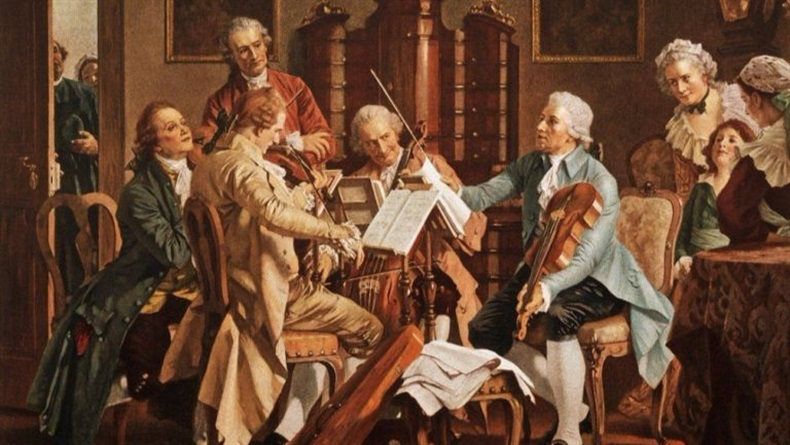

Whiterockmusic
Müziğe dair her şey burada...
Sizin için...
En beğendiğiniz postlar
POP MÜZİK
Pop müziğin ortaya çıkışı, Sanayi Devrimi sonrası yaşanan endüstriyelleşmeyle yakın ilişki içinde... 20. yüzyılın ilk çeyreğinde fabrikaların seri üretime geçmeye başlaması ve tüketilen her şeyin fabrikasyon bir hale dönüşmesi, pop müziğin de temellerini atan faktörler arasında kabul ediliyor. Fabrikalar tarafından bir anda çok sayıda pikap ve plak üretilmesi, müziği de bir endüstri haline getirince geniş kitlelere hitap edecek ve yüksek satış rakamlarına ulaşacak şarkılara ihtiyaç duyuluyor. Bu ihtiyacı karşılamak için ortaya çıkarılan pop müzik akımının dünyayı kasıp kavurması ise 1960'lı yıllara tarihlendiriliyor. Bu tarihlerde Elvis Presley, Beatles..
Devamını görROCK MÜZİK
1950' li yıllarda ortaya çıkmış olan rock müzik, batı dünyasının sanat müziği ile halk müziği anlayışlarının kendi kavramları doğrultusunda pop müziğe taşınmış biçimidir. Rock müziğin kaynağı olarak, Rhythm and Blues ve Country, olarak tanımlanan, Amerikan siyah müziği gösterilir. Bu müzikler, daha çok siyah ırklı insanlara hitap etmekte iken, 1950' li yılların başlarında Alan Freed isimli bir discjokey, sunduğu radyo programında, beyaz gençlerin de bu müzikleri severek dinlediklerini fark etmiş, bu müziklere Rock and roll adını vererek programlarında kullanmaya başlamış. İlk etapta bölgesel olarak dinlenen bu yeni müzik tarzı daha sonraları bütün dünyaya yayılmıştır. Chuck Berry ve Elvis Presley..
Devamını görKLASİK MÜZİK
Klasik Batı Müziği, kökeni Antik Yunan müzik kültürüne dayandırılan, daha sonra Batı Roma İmparatorluğu'nun çöküşüyle başlayan Orta Çağ ve Gotik dönemde[1] çok sesliliğin gelişimiyle beraber daha da biçimlenmiş, kilise ve saray baskısı altında Rönesans'ın erken yüzyılında vokal polifoni[2] çerçevesi içinde gelişmiş, Yüksek Rönesans ile beraber çalgı müziğinin de yükselişiyle içeriği bugünün klasik müzik olarak adlandırılan biçimleri ve teknikleriyle gelişimini sürdürmüş bir kurumsal müziğin, kilise baskısına direnen halk müziğinin dans ve şarkı biçimleriyle karşılıklı etkileşimi sonucu gelişimini sürdürmüş olan, uluslararası olarak kabul görmüş müzik türüdür. En önemli özelliği..
Devamını gör“Ruhun müziği kâinatta duyulur.”
Lao TZU
Müziğin Tarihçesi

Müziğin tarihi insanlık tarihi kadar eskiye dayanır. İnsanlar ritim, melodi ve sesi kullanarak iletişim kurmaya, duygularını ifade etmeye ve kültürel bağlarını güçlendirmeye başladılar. Müzik, kültürler arası etkileşimin bir sonucu olarak farklı formlarda ve tarzlarda gelişti. Müzik tarihi büyük ölçüde coğrafi ve kültürel farklılıklara bağlıdır. Eski çağlarda, müzik genellikle ritüeller, dini törenler, eğlenceler ve hikaye anlatımı için kullanılırdı. Antik çağlarda, Yunan ve Roma kültürlerinde müzik önemli bir yer tutardı. Orta Çağ'da kilise müziği büyük bir gelişme gösterdi ve dini müzik, Avrupa'da ve diğer bölgelerde büyük bir etki yarattı.
Barok dönemde Johann Sebastian Bach, George Frideric Handel gibi besteciler önemli eserler ortaya koydular. Klasik dönemde Wolfgang Amadeus Mozart, Ludwig van Beethoven gibi besteciler müziğin evrensel dilini daha da ileriye taşıdılar. yüzyılın sonları ve 20. yüzyılın başlarında müzikte devrim niteliğinde değişiklikler oldu. Bu dönemde caz, blues, rock and roll gibi popüler müzik türleri doğdu. Teknolojik gelişmeler, kayıt tekniklerindeki ilerlemeler ve daha geniş kitlelere ulaşım, müziğin evriminde büyük rol oynadı. Bugün müzik, çok çeşitli türlerde ve tarzlarda var olmaya devam ediyor. Dijital çağın getirdiği olanaklar sayesinde müzik, internet aracılığıyla her köşeye ulaşabiliyor ve dünya çapında milyonlarca insanın hayatında önemli bir yer tutuyor.
Müzik Tarihinin Dönemleri
Müzik tarihi genellikle belirli dönemlere ayrılır ve her dönemde farklı tarzlarda ve karakteristik özelliklerde müzik yapılmıştır. İşte genel hatlarıyla müzik tarihindeki temel dönemler:
Orta Çağ (500-1400): Kilise müziği büyük ölçüde egemendi. Bu dönemde en belirgin müzik türü gregoryen şarkılardı. Bu dönem, dinsel ve liturjik müziğin gelişimi açısından önemlidir.
Rönesans (1400-1600): Müzikte büyük bir değişim dönemi. İnsanizm ve sanatsal yeniden canlanma bu dönemi karakterize eder. Çok sesli müzik önem kazanır ve madrigaller gibi yeni formlar gelişir.
Barok (1600-1750): Bu dönemde müzik daha duygusal ve süslü hale gelir. Dönemin belirgin özellikleri arasında kontrpuan, baskın melodiler ve büyük orkestral yapılar yer alır.
Klasik (1750-1820): Klasik dönem, Mozart, Beethoven, Haydn gibi büyük bestecilerin eserlerinin ön plana çıktığı bir dönemdir. Daha simetrik yapılar, net formlar ve denge önem kazanmıştır.
Romantik (1820-1900): Bu dönemde duygusal ifade önem kazanır. Duygusallık, dramatik ifadeler, büyük orkestralar ve daha özgür yapılar karakteristiktir.
Yirminci Yüzyıl ve Sonrası (1900'lerden günümüze): Bu dönem, çeşitli akımların ve tarzların bir arada bulunduğu bir karmaşıklık dönemidir. Modernizm, postmodernizm, minimalist, çağdaş ve deneysel tarzlar gibi birçok farklı müzik akımı bu dönemi karakterize eder.
Her dönem, belirli müzikal özelliklere ve bestecilere sahiptir. Bu dönemlerin her biri, müzik tarihindeki evrimi ve farklı estetik anlayışları temsil eder.